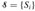
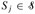
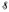
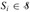

|
|
< Day Day Up > |
|
Many chapters of this book touch on the elements of discrete mathematics. This chapter reviews more completely the notations, definitions, and elementary properties of sets, relations, functions, graphs, and trees. Readers already well versed in this material need only skim this chapter.
A set is a collection of distinguishable objects, called its members or elements. If an object x is a member of a set S, we write x ∈ S (read "x is a member of S" or, more briefly, "x is in S"). If x is not a member of S, we write x ∉ S. We can describe a set by explicitly listing its members as a list inside braces. For example, we can define a set S to contain precisely the numbers 1, 2, and 3 by writing S = {1, 2, 3}. Since 2 is a member of the set S, we can write 2 ∈ S, and since 4 is not a member, we have 4 ∉ S. A set cannot contain the same object more than once,[1] and its elements are not ordered. Two sets A and B are equal, written A = B, if they contain the same elements. For example, {1, 2, 3, 1} = {1, 2, 3} = {3, 2, 1}.
We adopt special notations for frequently encountered sets.
Ø denotes the empty set, that is, the set containing no members.
Z denotes the set of integers, that is, the set {..., -2, -1, 0, 1, 2,...}.
R denotes the set of real numbers.
N denotes the set of natural numbers, that is, the set {0, 1, 2,...}.[2]
If all the elements of a set A are contained in a set B, that is, if x ∈ A implies x ∈ B, then we write A ⊆ B and say that A is a subset of B. A set A is a proper subset of B, written A ⊂ B, if A ⊆ B but A ≠ B. (Some authors use the symbol "⊂" to denote the ordinary subset relation, rather than the proper-subset relation.) For any set A, we have A ⊆ A. For two sets A and B, we have A = B if and only if A ⊆ B and B ⊆ A. For any three sets A, B, and C, if A ⊆ B and B ⊆ C, then A ⊆ C. For any set A, we have Ø ⊆ A.
We sometimes define sets in terms of other sets. Given a set A, we can define a set B ⊆ A by stating a property that distinguishes the elements of B. For example, we can define the set of even integers by {x : x ∈ Z and x/2 is an integer}. The colon in this notation is read "such that." (Some authors use a vertical bar in place of the colon.)
Given two sets A and B, we can also define new sets by applying set operations:
The intersection of sets A and B is the set
A ∩ B = {x : x ∈ A and x ∈ B}.
The union of sets A and B is the set
A ∪ B = {x : x ∈ A or x ∈ B}.
The difference between two sets A and B is the set
A - B = {x : x ∈ A and x ∉ B}.
Set operations obey the following laws.
Empty set laws:
A ∩ Ø = Ø,
A ∪ Ø = A.
Idempotency laws:
A ∩ A = A,
A ∪ A = A.
Commutative laws:
A ∩ B = B ∩ A,
Associative laws:
A ∩ (B ∩ C) = (A ∩ B) ∩ C,
A ∪ (B ∪ C) = (A ∪ B) ∪ C.
Distributive laws:
Absorption laws:
A ∩ (A ∪ B) = A,
A ∪ (A ∩ B) = A.
DeMorgan's laws:
The first of DeMorgan's laws is illustrated in Figure B.1, using a Venn diagram, a graphical picture in which sets are represented as regions of the plane.
Often, all the sets under consideration are subsets of some larger set U called the universe. For example, if we are considering various sets made up only of integers,the set Z of integers is an appropriate universe. Given a universe U, we define the complement of a set A as Ā = U - A. For any set A ⊆ U, we have the following laws:
DeMorgan's laws (B.2) can be rewritten with complements. For any two sets B, C ⊆ U, we have
Two sets A and B are disjoint if they have no elements in common, that is, if A ∩ B = Ø. A collection  of nonempty sets forms a partition of a set S if
the sets are pairwise disjoint, that is, Si,  and i ≠ j imply Si ∩ Sj = Ø, and
their union is S, that is,
In other words,  forms a partition of S if each element of S appears in exactly one .
The number of elements in a set is called the cardinality (or size) of the set, denoted |S|. Two sets have the same cardinality if their elements can be put into a one-to-one correspondence. The cardinality of the empty set is |Ø| = 0. If the cardinality of a set is a natural number, we say the set is finite; otherwise, it is infinite. An infinite set that can be put into a one-to-one correspondence with the natural numbers N is countably infinite; otherwise, it is uncountable. The integers Z are countable, but the reals R are uncountable.
For any two finite sets A and B, we have the identity
from which we can conclude that
|A ∪ B| ≤ |A| + |B|.
If A and B are disjoint, then |A ∩ B| = 0 and thus |A ∪ B| = |A|+|B|. If A ⊆ B, then |A| ≤ |B|.
A finite set of n elements is sometimes called an n-set. A 1-set is called a singleton. A subset of k elements of a set is sometimes called a k-subset.
The set of all subsets of a set S, including the empty set and S itself, is denoted 2S and is called the power set of S. For example, 2{a,b} = {Ø,{a}, {b}, {a, b}}. The power set of a finite set S has cardinality 2|S|.
We sometimes care about setlike structures in which the elements are ordered. An ordered pair of two elements a and b is denoted (a, b) and can be defined formally as the set (a, b) = {a, {a, b}}. Thus, the ordered pair (a, b) is not the same as the ordered pair (b, a).
The Cartesian product of two sets A and B, denoted A × B, is the set of all ordered pairs such that the first element of the pair is an element of A and the second is an element of B. More formally,
A × B = {(a b) : a ∈ A and b ∈ B}.
For example, {a, b} × {a, b, c} = {(a, a), (a, b), (a, c), (b, a), (b, b), (b, c)}. When A and B are finite sets, the cardinality of their Cartesian product is
The Cartesian product of n sets A1, A2,..., An is the set of n-tuples
A1 × A2 × ··· × An = {(a1, a2,..., an) : ai ∈ Ai, i = 1, 2,..., n},
whose cardinality is
|A1 × A2 × ··· × An| = |A1| · |A2| · · · |An|
if all sets are finite. We denote an n-fold Cartesian product over a single set A by the set
An = A × A × ··· × A,
whose cardinality is |An| = |A|n if A is finite. An n-tuple can also be viewed as a finite sequence of length n (see page 1078).
Prove the generalization of equation (B.3), which is called the principle of inclusion and exclusion:
|A1 ∪ A2 ∪ ··· ∪ An| = |A1| + |A2| + ··· + |An| - |A1 ∩ A2| - |A1 ∩ A3| (all pairs) + |A1 ∩ A2 ∩ A3| + ··· (all triples) ⋮ + (-1)n-1 |A1 ∩ A2 ∩ ··· ∩ An|.
|
|
< Day Day Up > |
|